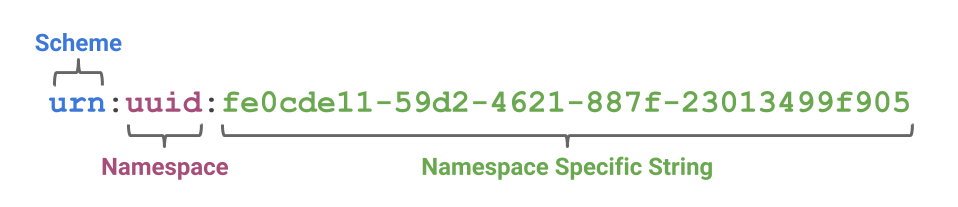

A Decentralized Identifier (DID) is a new type of identifier that is
globally unique, resolveable with high availability, and cryptographically
verifiable. DIDs are typically associated with cryptographic material, such
as public keys, and service endpoints, for establishing secure communication
channels. DIDs are useful for any application that benefits from
self-administered, cryptographically verifiable identifiers such as
personal identifiers, organizational identifiers, and identifiers for
Internet of Things scenarios. For example, current commercial deployments of
W3C Verifiable Credentials heavily utilize Decentralized Identifiers to
identify people, organizations, and things and to achieve a number of
security and privacy-protecting guarantees. This document is an introduction
to the concept of Decentralized Identifiers.
Portions of the work on this specification have been funded
by the United States Department of Homeland Security's Science
and Technology Directorate under contracts
HSHQDC-16-R00012-H-SB2016-1-002 and HSHQDC-17-C-00019. The
content of this specification does not necessarily reflect the
position or the policy of the U.S. Government and no official
endorsement should be inferred.
Work on this specification has also been supported by the Rebooting
the Web of Trust community facilitated by Christopher Allen,
Shannon Appelcline, Kiara Robles, Brian Weller, Betty Dhamers,
Kaliya Young, Manu Sporny, Drummond Reed, Joe Andrieu, Kim Duffy, and
Heather Vescent.
Introduction
At a superficial level, a decentralized
identifier (DID) is simply a new type
of globally unique identifier. But at a deeper level, DIDs are
the core component of an entirely new layer of decentralized
digital identity and public key infrastructure (PKI) for the
Internet. This decentralized public key
infrastructure (DPKI) could have as much
impact on global cybersecurity and cyberprivacy as the
development of the SSL/TLS
protocol for encrypted Web traffic (now the largest
PKI in the world).
This primer is designed to give newcomers to DID
architecture the background they need to understand not just
the DID specification, but the overall architecture for
decentralized identity represented by the family of DID-related
specifications currently under development. It covers:
Background on the origin of DIDs and the DID
specification.
How DIDs differ from other globally-unique
identifiers.
How the syntax of DIDs can be adapted to work with
decentralized networks.
How DIDs resolve to DID Documents
containing public keys and service endpoints.
The key role that DID Methods play in
the implementation of DID infrastructure.
Privacy considerations for the use of DIDs.
How DID infrastructure lays the foundation for
verifiable credentials.
How
DIDs Differ from Other Globally Unique Identifiers
The need for globally unique identifiers that do not require
a centralized registration authority is not new.
UUIDs (Universally Unique Identifiers, also called
GUIDs, Globally Unique Identifiers) were developed for this
purpose in the 1980s and standardized first by the Open
Software Foundation and then by IETF RFC
4122.
The need for persistent identifiers (identifiers that can be
assigned once to an entity and never need to change) is also
not new. This class of identifiers was standardized as URNs
(Uniform Resource Names) first by IETF RFC 2141
and more recently by RFC
8141.
As a rule, however, UUIDs are not globally resolvable and
URNs – if resolvable – require a centralized registration
authority. In addition, neither UUIDs or URNs inherently
address a third characteristic – the ability to
cryptographically verify ownership of the
identifier.
For self-sovereign identity, which can be
defined as a lifetime portable digital identity that does not
depend on any centralized authority, we need a new class of
identifier that fulfills all four requirements: persistence,
global resolvability, cryptographic verifiability, and
decentralization.
The Format of a DID
In 2016 the developers of the DID specification agreed with
a suggestion from Christopher Allen that DIDs could be adapted
to work with multiple blockchains by following the same basic
pattern as the URN specification:

urn:uuid:fe0cde11-59d2-4621-887f-23013499f905
The key difference is that with DIDs the namespace component
identifies a DID method, and a DID
method specification specifies the format of the
method-specific identifier.
did:example:12345abcde
DID methods (further explained below) define how DIDs work
with a specific blockchain. All DID method specs must define
the format and generation of the method-specific identifier.
Note that the method specific identifier string
must be unique in the namespace of that DID
method.
DID Documents
DID infrastructure can be thought of as a global key-value
database in which the database is all DID-compatible
blockchains, distributed ledgers, or decentralized networks. In
this virtual database, the key is a DID, and the value is a
DID document. The purpose of the DID document
is to describe the public keys, authentication protocols, and
service endpoints necessary to bootstrap
cryptographically-verifiable interactions with the identified
entity.
A DID document is a valid JSON-LD
object that uses the DID context (the
RDF vocabulary of property names) defined in the DID
specification. This includes six components (all optional):
The DID itself, so the DID document is
fully self-describing.
A set of cryptographic material, such
as public keys, that can be used for authentication or
interaction with the DID subject.
A set of cryptographic protocols for
interacting with the DID subject, such as authentication
and capability delegation.
A set of service endpoints that
describe where and how to interact with the DID
subject.
Timestamps for auditing.
A optional JSON-LD signature if needed
to verify the integrity of the DID document.
DIDs and DID documents can be adapted to any modern
blockchain, distributed ledger, or other decentralized network
capable of resolving a unique key into a unique value. It does
not matter whether the blockchain is public, private,
permissionless, or permissioned.
Defining how a DID and DID document are created, resolved,
and managed on a specific blockchain or “target system” is the
role of a DID method specification. DID method
specifications are to the generic DID specification as URN
namespace specifications (UUID, ISBN, OID, LSID, etc.) are to
the generic IETF URN specification (RFC
8141).
DID method specifications typically define at least the
following operations for a particular target system:
Create. Some DID methods may generate a
DID directly from a cryptographic key pair. Others may use
the address of a transaction or a smart contract on the
blockchain itself.
Read. Some DID methods use blockchains
that can store DID documents directly on the blockchain.
Others may instruct DID resolvers to construct them
dynamically based on attributes of a blockchain record.
Still others may store a pointer on the blockchain to a DID
document stored in one or more parts on other decentralized
storage networks such as
IPFS or STORJ.
Update. The update operation is the
most critical from a security standpoint because control of
a DID document represents control of the public keys or
proofs necessary to authenticate an entity (and therefore
for an attacker to impersonate the entity). Since
verification of DID document update permissions can only be
enforced by the target blockchain, the DID method
specification must define precisely how authentication and
authorization are performed for any update operation.
Delete. DID entries on a blockchain are
by definition immutable, so they can never be “deleted” in
the conventional database sense. However they can be
revoked in the cryptographic sense. A DID
method specification must define how this termination is
performed, e.g., by writing a null DID document.
See the DID Method
Registry for a complete list of all known DID Method
specifications.
DIDs and Privacy by
Design
Privacy is an essential component of any identity management
solution; it is especially critical for a global identity
system that uses immutable public blockchains. Thankfully DID
architecture can incorporate Privacy
by Design at the very lowest levels of infrastructure
and thus become a powerful, new, privacy-preserving technology
if deployed using best practices such as:
Pairwise-pseudonymous DIDs. While DIDs
can be used as well-known public identifiers, they can also
be used as private identifiers issued on a per-relationship
basis. So rather than a person having a single DID, like a
cell phone number or national ID number, she can have
thousands of pairwise-unique DIDs that cannot be correlated
without her consent, yet can still be managed as easily as
an address book.
Off-chain private data. Storing any
type of PII on a public blockchain, even encrypted or
hashed, is dangerous for two reasons: 1) the encrypted or
hashed data is a global correlation point when the data is
shared with multiple parties, and 2) if the encryption is
eventually broken (e.g., quantum
computing), the data will be forever accessible on
an immutable public ledger. So the best practice is to
store all private data off-chain and exchange it only over
encrypted, private, peer-to-peer connections.
Selective disclosure. The decentralized
PKI (DPKI) that DIDs make possible opens the door to
individuals gaining greater control over their personal
data in two ways. First, it enables it to be shared using
encrypted digital credentials (see below). Second, these
credentials can use zero-knowledge
proof cryptography for data minimization, e.g., you can disclose that
you are over a certain age without disclosing your exact
birthdate.
DIDs and Verifiable
Credentials
DIDs are only the base layer of decentralized identity
infrastructure. The next higher layer – where most of the value
is unlocked – is verifiable credentials. This
is the technical term for a digitally signed electronic
credential that conforms to the interoperability standards
being developed by the W3C Verifiable
Claims Working Group.
DIDs can be used to identify various entities in the
Verifiable Credentials ecosystem such as issuers, holders,
subjects, and verifiers. More generally, DIDs can be used as
identifiers for people, devices, and organizations.
Besides the links throughout this primer, these additional
resources are available to anyone interested in joining the
communities that are actively developing specifications,
experiments, and pilot projects.